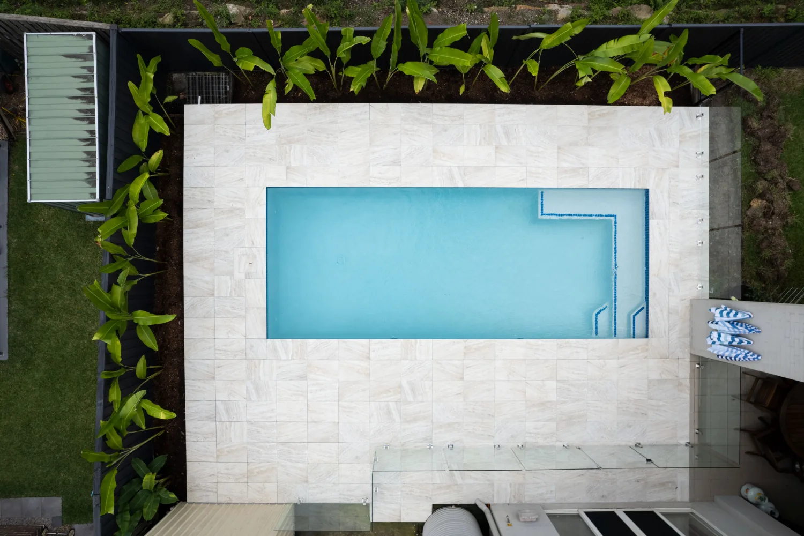
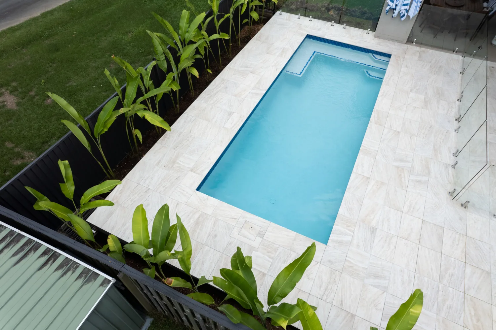
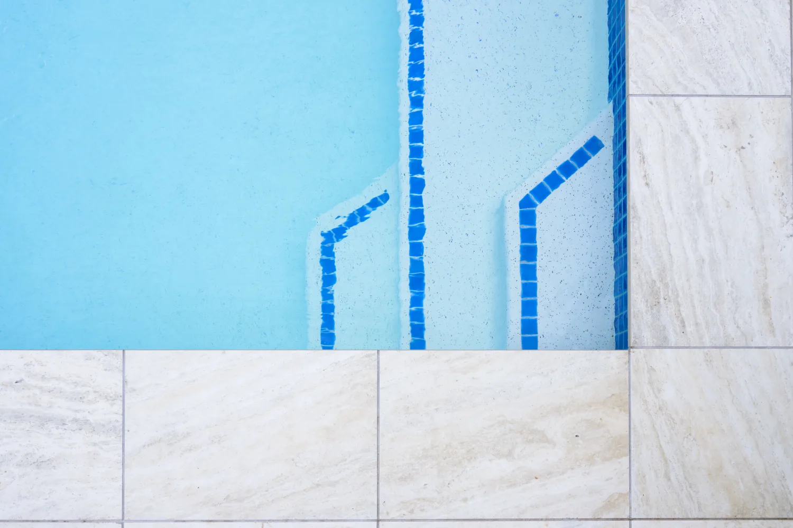
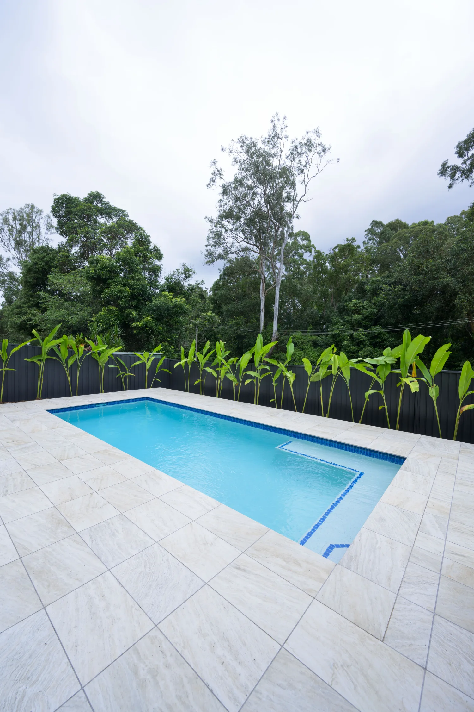
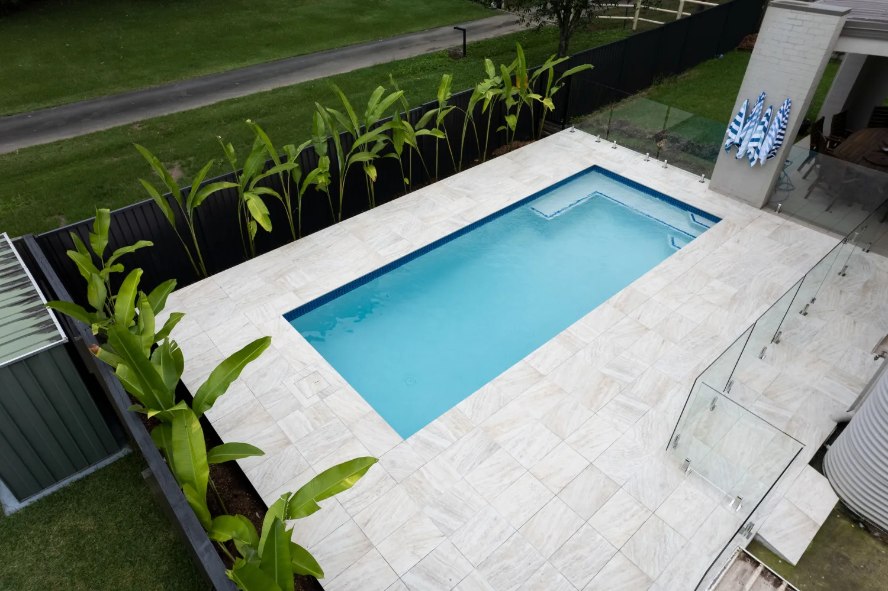

This Ferny Hills backyard backs onto bushland, so the job was to keep things clean and let the trees do the talking. We built a rectangular concrete pool with a light interior and a full-width step ledge, picked out with a blue tile trim so the steps read clearly from above.
A wide surround of large-format pale tiles keeps the space cool underfoot, with frameless glass on the house side. Along the dark boundary fence, a strip of tropical screening softens the edge and frames the water, and a rendered feature wall adds a spot for art.





Services on this job: Custom concrete pools · Glass pool fencing · Pool landscaping · More work in Brisbane northside
Send us your block and your wishlist. We'll come back with what's possible.
Start your project